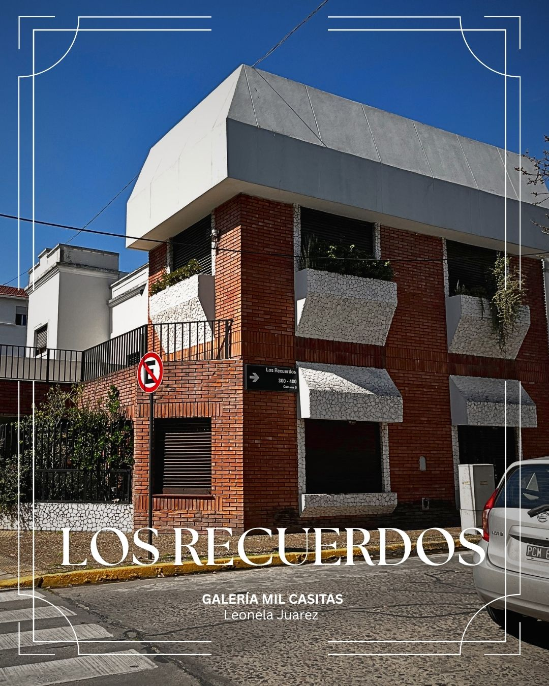
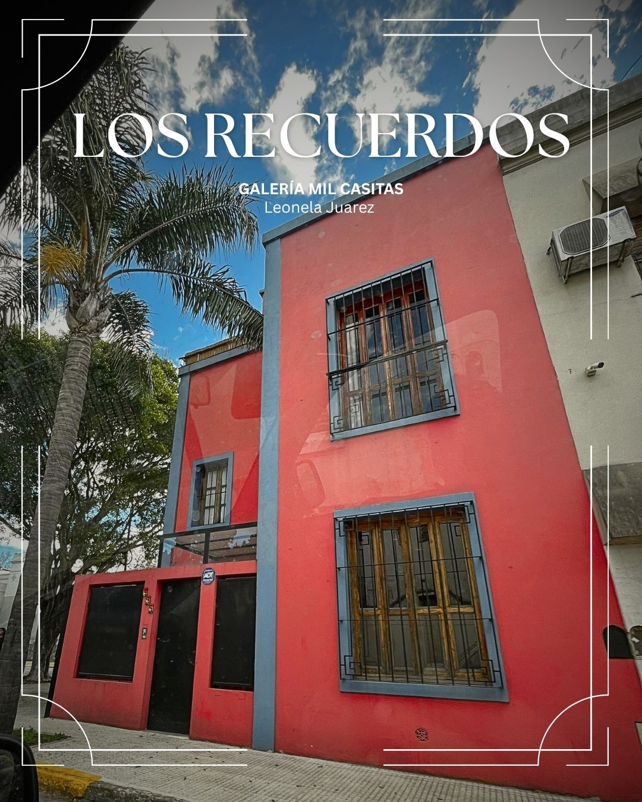
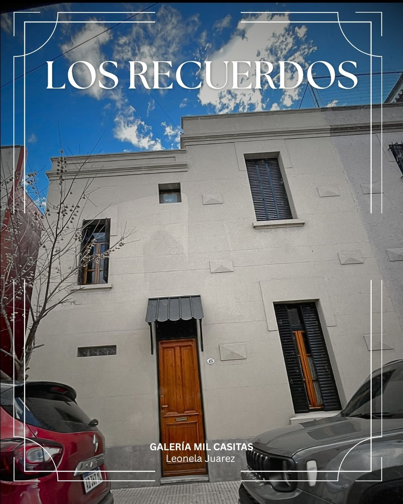
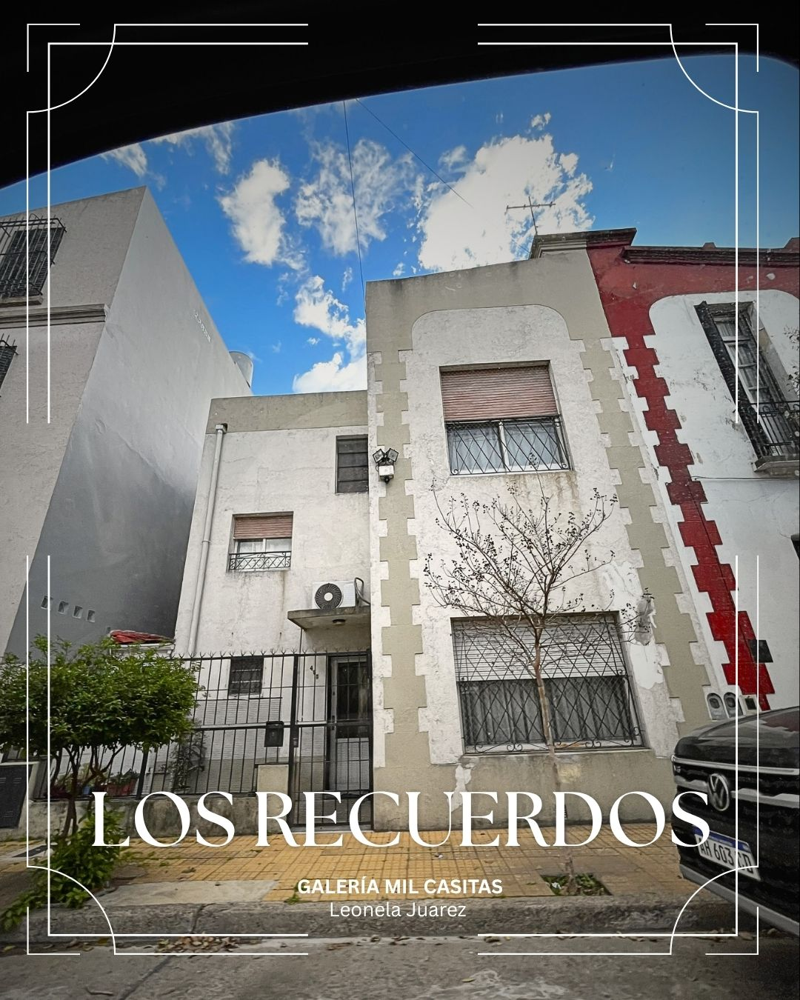
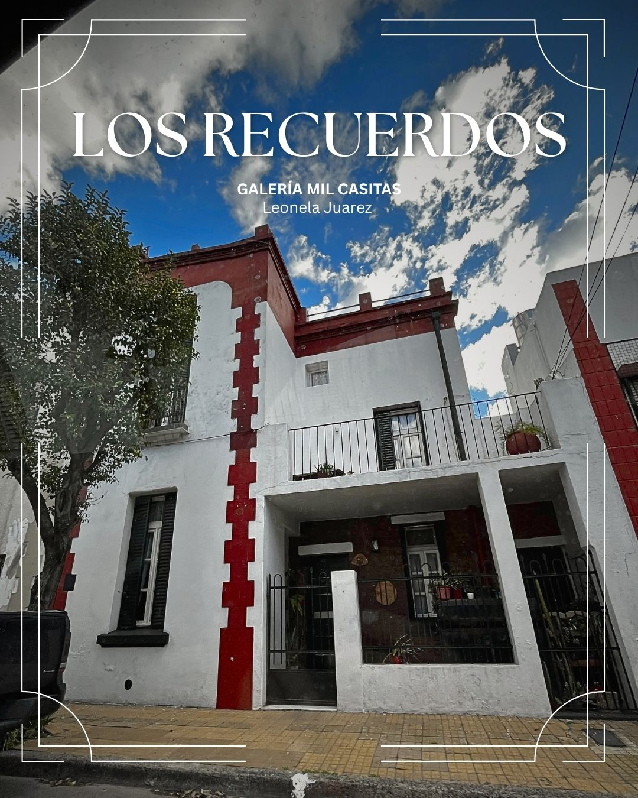

Pasaje Los Recuerdos
El Pasaje Los Recuerdos es una pequeña y pintoresca calle peatonal escondida en el barrio de Liniers, en la Ciudad Autónoma de Buenos Aires. A diferencia de los grandes pasajes del centro porteño, su historia está íntimamente ligada a la identidad trabajadora, al fútbol barrial y al nacimiento de grandes marcas locales.
Ubicación
Se encuentra en el sector oeste de la capital, una zona que comenzó a poblarse de manera urbana tras la llegada del ferrocarril a fines del siglo XIX.
Cuna de Clubes
En los terrenos ubicados en las inmediaciones de las calles Humaitá y el Pasaje Los Recuerdos, un grupo de jóvenes fundó el 2 de julio de 1931 el club que hoy se conoce como el Club Atlético Liniers (originalmente llamado Sarmiento).
Historias Barriales
El Origen de los Alfajores Cachafaz
Uno de los datos más curiosos y populares del Pasaje Los Recuerdos ocurrió a finales de la década de 1990. En una de las casas de este pasaje vivía una familia cuya madre, para afrontar una difícil situación económica, comenzó a cocinar alfajores de maicena caseros. Con el tiempo, sus tres hijos se hicieron cargo del emprendimiento familiar, instalaron una pequeña fábrica y bautizaron a la marca como Cachafaz, que era el sobrenombre del hermano menor. El diseño inicial de su famoso envoltorio buscó imitar la estética de los tradicionales alfajores marplatenses, y las primeras ventas a nivel comercial nacieron en los kioscos del propio barrio de Liniers.
Los Orígenes y el Fútbol
A principios de la década de 1930, la zona de Liniers continuaba en pleno desarrollo urbano. El 2 de julio de 1931, un grupo de jóvenes que jugaba al fútbol de forma amateur en un terreno baldío delimitado por la calle Humaitá y el Pasaje Los Recuerdos fundó el club Sarmiento. Tras fusionarse con otra entidad vecina, este club cambió su nombre a Club Atlético Liniers (hoy conocido como Club Social y Deportivo Liniers). Aquella canchita precaria junto al pasaje fue uno de los primeros e improvisados escenarios de los orígenes de la institución.

Esta casa de esquina de dos pisos tiene una fachada distintiva que combina ladrillos rojos a la vista con elementos de piedra texturizada y paredes blancas. Presenta balcones en el segundo piso con barandillas de hierro negro y jardineras.

Esta casa de dos pisos destaca por su vibrante fachada pintada de rojo intenso con acentos azul claro. Tiene grandes ventanas con marcos de madera y barras de seguridad de hierro negro. La puerta de entrada negra se encuentra detrás de una pared de privacidad con un pequeño cartel de alarma.

Esta elegante casa de dos pisos tiene una fachada blanca con detalles de molduras decorativas. Cuenta con ventanas cuadradas con marcos oscuros y una puerta de entrada de madera tallada protegida por un pequeño toldo negro.

Esta casa de dos pisos presenta una fachada que combina paredes blancas con detalles de molduras grises. Tiene ventanas cuadradas con marcos oscuros y una puerta de entrada de metal negro protegida por una reja de hierro. La propiedad está rodeada por una valla de hierro negro con arbustos verdes plantados en el interior.

Esta encantadora casa de dos pisos exhibe una fachada blanca con un patrón de ladrillos rojos que sigue la línea del techo. Tiene ventanas cuadradas con marcos oscuros y una puerta de entrada de metal negro detrás de una reja de hierro. Un gran balcón en el segundo piso con barandillas de hierro negro ofrece vistas a la calle, decorado con plantas en macetas.